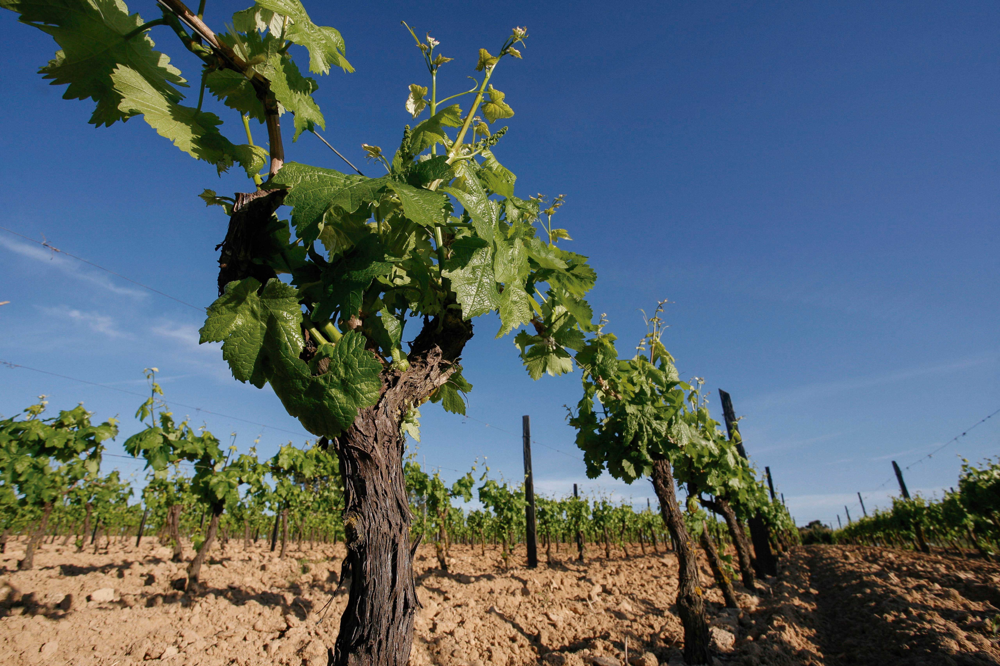

Informações
Nesta página encontra informações sobre os acessos ao Cartaxo e algumas curiosidades sobre a cidade e a sua ligação ao vinho.
Acessos
| Acessos ao Cartaxo | ||
|---|---|---|
| Tipo | Via / Estação | Descrição |
| Rodoviário | A1 | Nó de acesso direto à autoestrada |
| EN 365-2 | Ligação ao nó da A1 de Aveiras de Cima | |
| EN3 | Liga o Carregado a Santarém | |
| Ferroviário | Estação do Setil | A mais importante, na Linha do Norte |
| Estação de Santana | Mobilidade regional | |
| Estação do Reguengo | Mobilidade regional | |
| Distâncias | Lisboa: cerca de 50 km · Santarém: cerca de 15 km | |
Curiosidades
- O Cartaxo é conhecido como a "capital do vinho".
- A Carta de Foral de D. Dinis já incentivava a plantação de vinhas no concelho.
- O concelho tem duas zonas vitivinícolas: o Campo, com castas brancas, e o Bairro, com castas tintas.
- O Cartaxo é referido nas obras de Gil Vicente e de Almeida Garrett.
- A cidade tem um Museu Rural e do Vinho, dedicado às tradições agrícolas da região.
